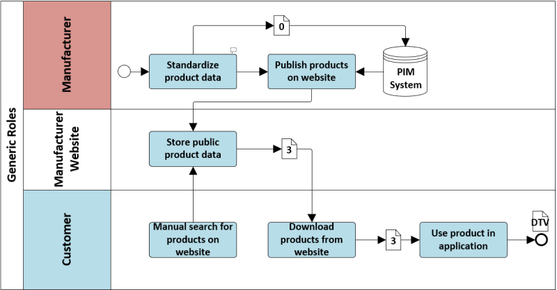

| Code | Version | Status | Author | Copyright |
|---|---|---|---|---|
| COD.1 | 0.9 | Candidate | CEN-TC442-WG2-TG3 | CEN - European Committee for Standardization |
The scope of this standard is to define the syntactic characteristics of a generic document produced to carry data and information basing on EN ISO 16739, EN ISO 23386 and EN ISO 23387 standards. The work has been also designed in accordance with other ongoing CEN TC442 WG4 works such as N17_NWIP 1: Properties - Part 1 Description methodology for BIM and other digital processes, N19_NWIP 3: Part 1 General structure of a product data template, N20_NWIP 4: Part 2 Framework for product data templates under CPR.
The application of such standards will allow manufacturers to structure, govern, update, maintain and transport their product information through a machine-readable format. In addition, several stakeholders of the process will be able to take the most out from their software technologies, avoiding data replication as well as saving time and improving both quality and transparency. The scenario within which this standard will apply will affects in fact a wide spectrum of professionalism: from producers to designers, from constructors to facility and property managers.
The syntactic approach considers as primary objective the ability to re-use specifications given in the international standard EN ISO 16739. This specific goal is going to be reached by the delivery of a new Model View Definition, as intended at buildingSMART.org, named “Construction Objects Data View” which will be made available alongside the others MVD already issued. Software houses and software application developers will find this work use and implementation simple and profitable because based on a widely accepted standard like EN ISO 16739.
Because digital data transmittal needs agreed structured data, predefined schemas and agreed property definitions, this standard conceptually splits between Data Template and a Data Sheet. Data Template is going to be defined as the demanded data schema, still missing data but possibly including limitations or required ranges, while Data Sheet represents rather the answer including completed or partially filled data. The first might represent level of information need requirements and definitions, general requests, while the second might represent catalogs, offering of products, selected or filtered data, approved data and so on. Data Sheet may be used as the input to be added into informative modeling storages as well as information to be saved in related repositories as Common Data Environments or Asset Information Models.
The work aims above all the scope of filling the technological gap still today preventing an effective digital dialogue between production and construction chains. Unfortunately, such a dialog is traditionally based on documentation, no matter if printed or digital, which for the most cases is not digitally computable. A secondary work objective is to constitute itself as a syntax suitable for the digital management of the contents requested by the Construction Products Regulation (CPR) which lays down harmonized rules for the distribution of construction products in the EU market, particularly covering demand of comparison of products performance, characteristics, certification, CE marking and conformity declarations.
The following purposes where identified in the context of digital product data exchange.
In order to identify a product and understand the function of a product a technical description is needed. This standard allows the exchange of a product description, technical and business properties, geometry, assets like pictures and mounting instructions in a digital data sheet. This digital product description could be used for design, specification, quotation processes and complete an as built model.
With digital product data it is easy to create bills of quantities of different
Description of this use case to be inserted here. (purchase orders, delivery forms) Direct Procurement: Part 1 (When you buy exactly one know product)
During construction phases, site managers assure day by day operations to keep the construction project on time and on budget. They also manage quality controls and the correspondence between built progresses and design’s prescriptions.
All players operating on site, both supervisors and contractors, exchange data related to products. Contractors receive design specification and according to them require product data to suppliers. All suppliers shall comply technical requirements and site inspectors should verify through technical check during site procurement and quality check during installations.
All data related to construction products, within construction site management will be variously demanded: technical specification, purchase orders, installation procedures, compliance with standards, checklists, etc.
Exchange of product data sheet also involve commissioning team, originally informed during materials approval and then responsible of certifications related to corrects performances, functionalities and warranty.
Import delivered real life products easily in their as-built-bim-models to document them for a later stage of development
Jobsites are complex environments, with workers interacting in challenging physical environments. Safety management has impacts on most construction operations: quality control, scheduling, cost control/budgeting and installations procedures. During all these phases, operators interact exchanging required documents in conformity to standards and regulations. About particular products commonly adopted like paints, silicones, thinners or premixed concretes, the Safety Coordinator at Execution Stage should approve their Safety Data Sheets provided by Manufacturers. On the construction site, however, the Health, Safety and Environment Coordinator deals not only with products but also with tools and machines through which the Contractor take advantages. Just think for example to work equipment, safety life lines and harnesses, lifting ropes, scaffoldings, cranes etc. Presence on site of such tools involves exchange of data and information actually only partially digitalized: CE certification or mark, operation and maintenance manual, periodic checks, authorizations and, sometimes, structural validation.
Description of this use case to be inserted here.
See appendix 9.9.

Manufacturers provide products’ catalogues through their website. All kinds of data can be easily shared online, but a complete digital revolution forecast possibility to express and exchange machine readable information.
Currently websites allow download sections with geometric and not geometric informative attributes. Tridimensional parametric models are often linked to authoring BIM formats with few possibilities of ensuring interoperability and unique structured language. Another disadvantage consists in data redundancy due to difficulty in representing information with a single digital format.
All these inconveniences bring to subsequent need of standards for representing machine readable data and for demanding the guaranty of interoperability to software houses. This also brings to an update of manufacturers’ website in terms of exchange of data and possibility to store new structured Product Data Sheets in external servers.
And Relationship between manufacturers and agents/distributors/shops/vendors (e.g. digital exchange of product libraries in the supply change)
-Local Online store on the website of a manufacturer
Digital Request: Part 2 Response: Part 1 or Part 2, depending on the format, the users of the website uses
This use case shall be described further. Is it the check of the As Built Product against the selected product? Product delivery validation Part 1
| Field | Mapping | Definition | 1 - Data template exchange | 2 - Requirement request exchange | 3 - Product catalogue exchange | 4 - Data sheet exchange |
|---|---|---|---|---|---|---|
| (Query) | \IfcObject | |||||
| Completely defined product | \IfcObject.ObjectType | The type denotes a particular type that indicates the object further. The use has to be established at the level of instantiable subtypes. In particular it holds the user defined type, if the enumeration of the attribute _PredefinedType_ is set to USERDEFINED. |
| Field | Mapping | Definition | 1 - Data template exchange | 2 - Requirement request exchange | 3 - Product catalogue exchange | 4 - Data sheet exchange |
|---|---|---|---|---|---|---|
| (Query) | \IfcProjectLibrary | |||||
| Data template | \IfcPropertySetTemplate.HasPropertyTemplates[*] \IfcComplexPropertyTemplate.HasPropertyTemplates[*] \IfcSimplePropertyTemplate | Reference to a set of property templates. It should only be provided, if the _PropertyType_ is set to COMPLEX. |
| Field | Mapping | Definition | 1 - Data template exchange | 2 - Requirement request exchange | 3 - Product catalogue exchange | 4 - Data sheet exchange |
|---|---|---|---|---|---|---|
| (Query) | \IfcProjectLibrary | |||||
| Header |
| Field | Mapping | Definition | 1 - Data template exchange | 2 - Requirement request exchange | 3 - Product catalogue exchange | 4 - Data sheet exchange |
|---|---|---|---|---|---|---|
| (Query) | \IfcPropertySetTemplate.HasPropertyTemplates[*] \IfcComplexPropertyTemplate.HasPropertyTemplates[*] \IfcSimplePropertyTemplate | |||||
| Field | Mapping | Definition | 1 - Data template exchange | 2 - Requirement request exchange | 3 - Product catalogue exchange | 4 - Data sheet exchange |
|---|---|---|---|---|---|---|
| (Query) | \IfcPropertyTemplate | |||||
| UserDefined_RelationComplexProperty | \IfcPropertyTemplate.PartOfComplexTemplate[*] \IfcComplexPropertyTemplate | Reference to a complex property templates. It should only be provided, if the _PropertyType_ of the referenced complex property template is set to COMPLEX. | ||||
| UserDefined_ConstraintAssociation | \IfcPropertyTemplate.HasAssociations[*] \IfcRelAssociatesConstraint.RelatingConstraint \IfcMetric.DataValue \IfcMetricValueSelect | The value to be compared on associated objects. A null value indicates comparison to null. { .change-ifc4} > IFC4 ADD1 CHANGE This attribute is now optional. | ||||
| UserDefined_Document Association | \IfcPropertyTemplate.HasAssociations[*] \IfcRelAssociatesDocument.Name \IfcLabel | Optional name for use by the participating software systems or users. For some subtypes of IfcRoot the insertion of the Name attribute may be required. This would be enforced by a where rule. | ||||
| UserDefined_Classification Association | \IfcPropertyTemplate.HasAssociations[*] \IfcRelAssociatesClassification.RelatingClassification \IfcClassificationReference.Location \IfcURIReference | Location, where the external source (classification, document or library) can be accessed by electronic means. The electronic location is provided as an URI, and would normally be given as an URL location string. { .change-ifc2x4} > IFC4 CHANGE The data type has been changed from _IfcLabel_ to _IfcURIReference_ > . |
| Field | Mapping | Definition | 1 - Data template exchange | 2 - Requirement request exchange | 3 - Product catalogue exchange | 4 - Data sheet exchange |
|---|---|---|---|---|---|---|
| (Query) | \IfcSimplePropertyTemplate | |||||
| UserDefined_RelationPropertySetTemplate | \IfcSimplePropertyTemplate.PartOfPsetTemplate[*] \IfcPropertySetTemplate | Reference to the _IfcPropertySetTemplate_ that defines the scope for the _IfcPropertyTemplate_. A single _IfcPropertyTemplate_ can be defined within the scope of zero, one or many _IfcPropertySetTemplate_'. | ||||
| UserDefined_AssociationUnitMeasureType | \IfcSimplePropertyTemplate.PrimaryUnit \IfcUnit | Primary unit assigned to the definition of the property. It should be provided, if the _PropertyType_ is set to: \\\\\\\\\\\* P_SINGLEVALUE: determining the _IfcPropertySingleValue.Unit_ \\\\\\\\\\\* P_ENUMERATEDVALUE: determining the _IfcPropertyEnumeration.Unit_ \\\\\\\\\\\* P_BOUNDEDVALUE: determining the _IfcPropertyBoundedValue.Unit_ \\\\\\\\\\\* P_LISTVALUE: determining the _IfcPropertyListValue.Unit_ \\\\\\\\\\\* P_TABLEVALUE: determining the _IfcPropertyTableValue.DefiningUnit_ | ||||
| UserDefined_PropertyValueSelect | \IfcSimplePropertyTemplate.TemplateType \IfcSimplePropertyTemplateTypeEnum | Property type defining whether the property template defines a property with a single value, a bounded value, a list value, a table value, an enumerated value, or a reference value. Or the quantity type defining whether the template defines a quantity with a length, area, volume, weight or time value. > NOTE the value of this property determines the correct use of the _PrimaryUnit_, _SecondaryUnit_, _PrimaryDataType_, _SecondaryDataType_, and _Expression_ attributes. |